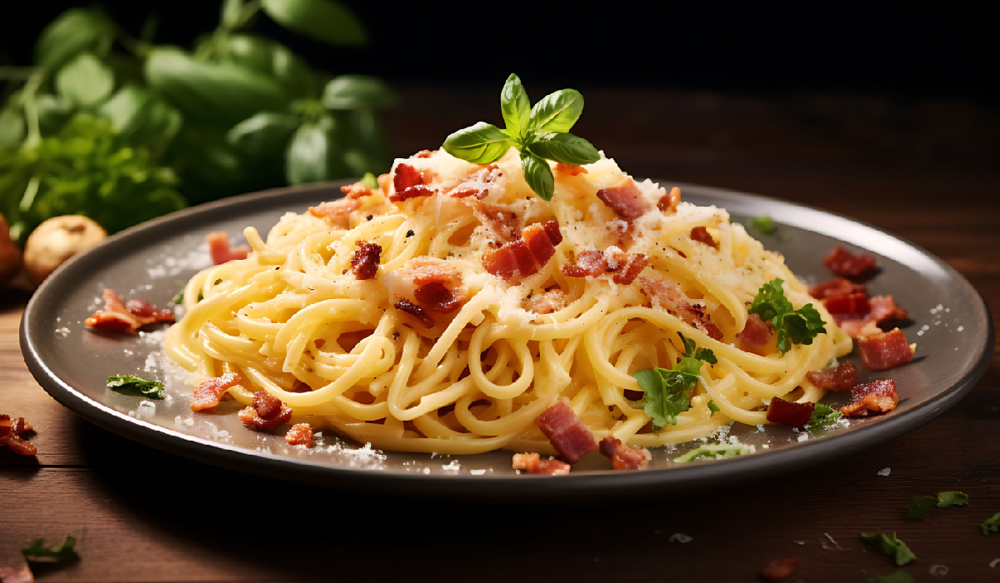

Inicio
Sobre mí
Recetas
Contacto
Otras Cosas
Espaguetis a la Carbonara

⏰
Tiempo total:
30 minutos
Ingredientes
450 g de espaguetis
1 cucharada de aceite de oliva
225 g de panceta sin corteza o beicon magro troceado
4 huevos
5 cucharadas de nata líquida
4 cucharadas de parmesano recién rallado
sal y pimienta
Preparación
1.
En una olla de base gruesa, ponga agua con un poco de sal y llévela a ebullición.
2.
Eche los espaguetis, deje que vuelva a hervir y cuézalos de 8 a 10 minutos o hasta que estén al dente.
3.
Mientras tanto, caliente el aceite en una sartén de base pesada y fría la panceta a fuego medio unos 8 o 10 minutos, removiendo con frecuencia.
4.
En un bol, bata los huevos con la nata líquida y salpimiente al gusto.
5.
Escurra los espaguetis y vuelva a ponerlos en la olla.
6.
Incorpore la panceta frita y, a continuación, la mezcla de huevo y la mitad del parmesano.
7.
Remueva todo bien y páselo a una fuente de servir caliente.
8.
Sirva los espaguetis a la carbonara enseguida con el resto del queso.
Autor: Recetas Caseras
Consejos:
Asegúrate de servir los espaguetis de inmediato para mantener la textura cremosa de la salsa.
Recetas